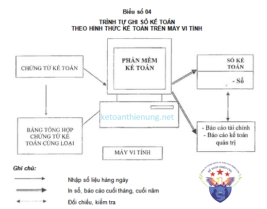
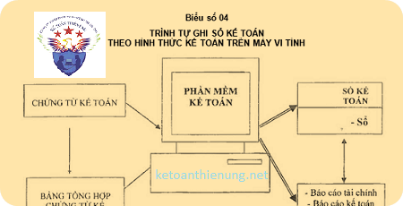

Hướng dẫn cách ghi sổ theo hình thức kế toán trên máy vi tính theo Thông tư 200 và 133: Đặc trưng và trình tự ghi sổ kế toán theo Hình thức kế toán trên máy vi tính.
1) Đặc trưng cơ bản của Hình thức kế toán trên máy vi tính:
- Công việc kế toán được thực hiện theo một chương trình phần mềm kế toán trên máy vi tính. Phần mềm kế toán được thiết kế theo nguyên tắc của một trong bốn hình thức kế toán hoặc kết hợp các hình thức kế toán quy định trên đây. Phần mềm kế toán không hiển thị đầy đủ quy trình ghi sổ kế toán, nhưng phải in được đầy đủ sổ kế toán và báo cáo tài chính theo quy định. Phần mềm kế toán được thiết kế theo Hình thức kế toán nào sẽ có các loại sổ của hình thức kế toán đó nhưng không hoàn toàn giống mẫu sổ kế toán ghi bằng tay.
2) Sơ đồ hình thức ghi sổ trên máy vi tính:

3) Trình tự ghi sổ kế toán theo Hình thức kế toán trên máy vi tính:
- Hàng ngày,
- Kế toán căn cứ vào chứng từ kế toán hoặc Bảng tổng hợp chứng từ kế toán cùng loại đã được kiểm tra, được dùng làm căn cứ ghi sổ, xác định tài khoản ghi Nợ, tài khoản ghi Có để nhập dữ liệu vào máy vi tính theo các bảng, biểu được thiết kế sẵn trên phần mềm kế toán. Theo quy trình của phần mềm kế toán, các thông tin được tự động nhập vào sổ kế toán tổng hợp (Sổ Cái hoặc Nhật ký- Sổ Cái...) và các sổ, thẻ kế toán chi tiết liên quan.
- Cuối tháng (hoặc bất kỳ vào thời điểm cần thiết nào),
- Kế toán thực hiện các thao tác khoá sổ (cộng sổ) và lập báo cáo tài chính. Việc đối chiếu giữa số liệu tổng hợp với số liệu chi tiết được thực hiện tự động và luôn đảm bảo chính xác, trung thực theo thông tin đã được nhập trong kỳ. Người làm kế toán có thể kiểm tra, đối chiếu số liệu giữa sổ kế toán với báo cáo tài chính sau khi đã in ra giấy. Cuối tháng, cuối năm sổ kế toán tổng hợp và sổ kế toán chi tiết được in ra giấy, đóng thành quyển và thực hiện các thủ tục pháp lý theo quy định.
Trên đây là những quy định về cách ghi sổ kế toán theo hình thức trên máy vi tính, ngoài ra các bạn có thể xem thêm: Hướng dẫn cách làm sổ sách kế toán trên Excel
Chúc các bạn thành công.
Chúc các bạn thành công.
__________________________________________________
